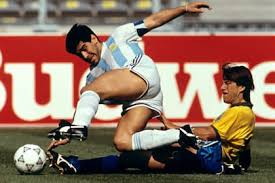

14.ª edición
El Mundial más defensivo
Copa Mundial de la FIFA Italia 1990
8 de junio – 8 de julio de 1990
País sede: Italia 🇮🇹
24 selecciones
52 partidos
Datos generales del torneo
- País sede: Italia 🇮🇹
- Ciudades sede: Roma, Milán, Nápoles, Turín, Bari, Florencia, Bolonia, Verona, Cagliari, Génova, Udine, Palermo
- Estadios: 12 recintos (incluye Stadio Olimpico y San Siro)
- Selecciones participantes: 24
- Partidos jugados: 52
- Goles anotados: 115 (uno de los promedios más bajos)
- Campeón: Alemania Federal 🇩🇪
- Subcampeón: Argentina 🇦🇷
- Tercer lugar: Italia 🇮🇹
- Cuarto lugar: Inglaterra 🏴
- Máximo goleador (Bota de Oro): Salvatore Schillaci (6 goles)
- Mejor jugador (Balón de Oro): Salvatore Schillaci
- Mejor portero: Sergio Goycochea
- Premio Fair Play: Inglaterra 🏴
Jugadas y momentos destacados
Italia 1990 es recordado por su carácter defensivo, las actuaciones heroicas de Goycochea,
el brillo inesperado de Schillaci y el drama en las semifinales entre Italia–Argentina e Inglaterra–Alemania.

Resumen del torneo
- Alemania ganó su tercer título mundial con un equipo sólido y físico dirigido por Franz Beckenbauer.
- Argentina, con Maradona lesionado y Goycochea inspiradísimo, llegó heroicamente hasta la final.
- Italia vio emerger al héroe inesperado: Salvatore Schillaci, Bota de Oro del torneo.
- Inglaterra alcanzó su mejor resultado desde 1966, cayendo en semifinales por penales ante Alemania.
- El torneo tuvo un estilo muy defensivo, lo que llevó a la FIFA a reformar reglas (como el backpass).
- La canción oficial “Un’estate italiana” se convirtió en un himno eterno del fútbol.
Fase final (últimos 4)
Semifinales
- 🇩🇪 Alemania 1–1 Inglaterra 🏴
Alemania gana 4–3 en penales
- 🇦🇷 Argentina 1–1 Italia 🇮🇹
Argentina gana 4–3 en penales
Tercer lugar
- 🇮🇹 Italia 2–1 Inglaterra 🏴
Final
- 🇩🇪 Alemania 1–0 🇦🇷 Argentina
Gol de Andreas Brehme (penal)
Selecciones participantes por grupo
Grupo A
- 🇮🇹 Italia
- 🇦🇹 Austria
- 🇺🇸 Estados Unidos
- 🇨🇿 Checoslovaquia
Grupo B
- 🇦🇷 Argentina
- 🇨🇲 Camerún
- 🇷🇴 Rumania
- 🇺🇸 Unión Soviética
Grupo C
- 🇧🇷 Brasil
- 🇨🇷 Costa Rica
- 🇸🇪 Suecia
- 🇸🇰 Escocia
Grupo D
- 🇩🇪 Alemania
- 🇦🇪 Emiratos Árabes Unidos
- 🇨🇴 Colombia
- 🇷🇫 Yugoslavia
Grupo E
- 🇪🇸 España
- 🇧🇪 Bélgica
- 🇺🇾 Uruguay
- 🇰🇷 Corea del Sur
Grupo F
- 🏴 Inglaterra
- 🇳🇱 Países Bajos
- 🇮🇪 Irlanda
- 🇪🇬 Egipto
Final: Alemania vs Argentina
La final se jugó el 8 de julio de 1990 en el Estadio Olímpico de Roma.
Fue un partido cerrado y muy físico. Alemania dominó y finalmente obtuvo
su gol con un penal ejecutado por Andreas Brehme.
Argentina sufrió expulsiones y no pudo repetir el título de 1986.
Alemania 🇩🇪 – Alineación titular
- DT: Franz Beckenbauer
- Bodo Illgner (POR)
- Thomas Berthold
- Klaus Augenthaler
- Andreas Brehme
- Jürgen Kohler
- Guido Buchwald
- Pierre Littbarski
- Lothar Matthäus (C)
- Jürgen Klinsmann
- Rudi Völler
Argentina 🇦🇷 – Alineación titular
- DT: Carlos Salvador Bilardo
- Sergio Goycochea (POR)
- Roberto Sensini
- Oscar Ruggeri
- Néstor Fabbri
- Roberto Monzón
- Pedro Troglio
- Jorge Burruchaga
- Diego Maradona (C)
- Claudio Caniggia (suspendido, no jugó)
- Gustavo Dezotti
Reseña general
Italia 1990 es recordado como uno de los Mundiales más tácticos y defensivos,
pero también uno de los más emocionantes en sus definiciones. La actuación de Goycochea,
las sorpresas de Camerún y Costa Rica, y la belleza de “Un’estate italiana” marcaron la edición.
Alemania logró su tercera estrella, mientras Argentina vivió un camino heroico lleno de sufrimiento,
con Maradona jugando lesionado y un equipo que dependió de la garra y del arquero Goycochea.